O IRMÃO QUE ERA UM VERDADEIRO PAI
CONFEDERAÇÃO
DOS TAMOIOS
João Ramalho era amigo de Brás
Cubas, o Governador da Capitania de São Vicente, e se casou com Mbici,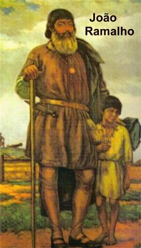
uma índia
também conhecida com o nome de Bartira, filha do Cacique Tibiriçá, chefe da
tribo dos Guaianases. Naquela época, segundo o conceito indígena, eles
acreditavam que um homem que se casasse com uma índia, passava a fazer parte da
tribo. Este fato colaborou para que fosse formada uma firme aliança entre os
portugueses e os índios Guaianases, e mais tarde, também com a tribo Tupiniquins,
que aderiu a aliança. Ambas as partes se ajudavam mutuamente, buscando cobrir
as necessidades do trabalho.
Por outro lado, como não havia
mão de obra suficiente para a lavoura, os colonizadores portugueses tiveram a
idéia de pegar índios de outras tribos, para trabalhar nas plantações de cana de
açúcar, que era à base da economia da Capitania de São Vicente. Sem lei que os
impedisse, caçavam e escravizavam os indígenas sem a menor cerimônia. E na continuidade,
os portugueses atacaram a tribo Tupinambás, porque Cairuçu, Cacique da Aldeia e sua tribo,
vinham fustigando e saqueando as propriedades portuguesas, em represália, por causa da
escravização dos índios, pelos lusitanos. A invasão foi ordenada por Brás Cubas,
Governador da Capitania, e houve muita destruição e mortes, sendo capturada
grande quantidade de índios, e entre eles o Cacique Cairuçu,
chefe da tribo, e o seu filho Aimberê.
Entretanto, em face dos maus
tratos sofridos no cativeiro, o Cacique Cairuçu morreu. E por isso, como era o
costume, prepararam a cerimônia para o sepultamento, de acordo com o ritual
indígena. Mas, sem que ninguém percebesse o filho Aimberê fugiu para as terras
da Capitania do Rio de Janeiro, e lá, trabalhou firme, instigando a revolta das
outras tribos contra os portugueses.
Em fins de 1554, Aimberê
reuniu-se no litoral, onde hoje é Mangaratiba, com os outros Chefes Tupinambás
que ocupavam a área litorânea que se estende desde Cabo Frio (Estado do Rio de
Janeiro) a Bertioga (Estado de São Paulo), ou seja, do litoral sul fluminense ao
litoral norte paulista, e juntos constituíram a temível Confederação dos Tamoios
(“Tamuya” no dialeto Tupinambás), que em português significa: “o mais
velho”, ou seja, “os mais antigos na área”.
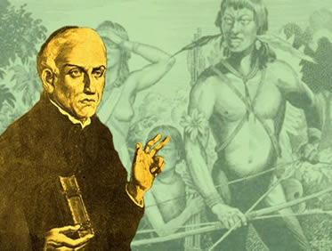
Faziam parte dos
Confederados os seguintes Chefes: o índio guerreiro Aimberê, o Cacique Pindobuçu
da Aldeia Tupinambás do Rio de Janeiro, o Cacique Cunhambebe da Aldeia de Angra
dos Reis, o Cacique Caoquira da Aldeia de Ubatuba, o Cacique Agaraí da Aldeia dos
Goianases, e ainda as Tribos dos Goitacases, dos Aimorés e dos Termiminó, que de
comum acordo elegeram como chefes: Aimberê e o Cacique Cunhambebe.
A Confederação tinha por objetivo
combater os portugueses e todos que os apoiassem, entre eles, Tibiriçá Chefe dos
Guaianases e a tribo Tupiniquins.
Em 1555, os protestantes
franceses desembarcaram no Rio de Janeiro, liderados pelo Almirante Nicolau
Durand de Villegaignon, e querendo permanecer na área, logo se aliaram a
Confederação dos Tamoios, oferecendo armas e munições, em troca da permanência
no território brasileiro, pois ambicionavam fundar aqui a França Antártica, para
receber todos aqueles que eram perseguidos em seu país.
O primeiro Chefe que Comandava a
Confederação foi o Cacique Cunhambebe, que residia numa Aldeia próxima a Angra
dos Reis. Era um valente e destemido guerreiro, que marcou sua presença na
história, por suas notáveis estratégias e ferozes ataques contra os portugueses.
Faleceu em sua Aldeia, em consequência de um surto de doenças contraídas pelo
contato com os brancos. Todas as tribos indígenas que viviam no litoral
brasileiro, sem exceções, eram antropófagos, comiam prazerosamente os seus
inimigos mortos em combate.
Aimberê foi eleito por
unanimidade, o novo Comandante Chefe da Confederação e logo de inicio,
inteligentemente usou a estratégia de ampliar a Confederação, procurando
Jagoanharó, chefe de uma tribo Goianases e sobrinho do Cacique Tibiriçá, para
que ele convencesse o seu tio, CaciqueTibiriçá dos Guaianases, a deixar os
portugueses e participar da Confederação, mesmo que fosse por experiência
durante um período de três luas. Mas quando as tribos se juntaram, surgiram
ciúmes que originaram desavenças entre os índios. Então, Tibiriçá decidiu
continuar fiel aos colonizadores portugueses. Resultou que foi travado um
violento combate entre a Confederação e os Guaianases, morrendo muita gente,
inclusive o Cacique Tibiriçá.
Padre Manuel da Nóbrega
percebendo aquela terrível onda de violência, a ganância dos franceses que já
estavam estabelecidos na Guanabara há vários anos, e também, a falta de atitude
da Coroa Portuguesa, convocou o Irmão José de Anchieta, para ajudá-lo a resolver
aquela situação. Padre Nóbrega não aceitava a presença dos franceses e
trabalhava para apaziguar os ânimos, estabelecendo um acordo de paz entre os
índios e os portugueses. Os dois missionários no dia 21 de Abril de 1563,
partiram da Vila de São Vicente no navio de José Adorno, um genovês que morava
na Vila, e rumaram para Iperoig (Ubatuba). Chegando ao local, Adorno mandou o
seu navio de volta e permaneceu com os missionários que foram recebidos pelos
Tamoios na praia, os quais, a principio, se mostraram hostis e com muita frieza,
mas sendo saudados por Anchieta no mais puro dialeto tupi com promessas de paz e
amizade, os índios se descontraíram e acolheram os emissários Jesuítas com
cortesia. Na Aldeia indígena, logo de início, o Cacique Caoquira enumerou uma
série de queixas contra os portugueses, que os missionários em absoluto silêncio
ouviram, como era o costume. Na continuidade do diálogo, nos dias
que se seguiram, Caoquira mandou emissários chamar todos os
Chefes Confederados para conversar com os Jesuítas.
Enquanto esperavam chegar os
Caciques das outras tribos, os dois missionários procuraram sensibilizar os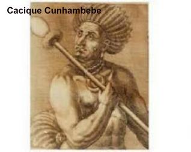
selvagens. Armaram uma Capela e ajudado pelo Irmão José, Padre Nóbrega, todo
paramentado celebrava a Santa Missa todos os dias. Os índios ficavam encantados
com a beleza da cerimônia. No final de cada Missa, o Irmão José de Anchieta, com
inteligência e sabedoria, lhes explicava a doutrina da Igreja, em tupi, de um
modo fácil, a fazê-los compreender. E com muito barulho, andando em volta dos
selvagens, batendo o pé no chão, gesticulando muito e fazendo pausas nos
momentos mais dramáticos de suas pregações, deixava os índios atenciosos e
concentrados, ouvindo as suas palavras. Logo, os Caciques Cunhambebe e Pindobuçu,
também chegaram com suas tribos inteiras, e com alegria, participavam da Santa
Missa.
Irmão José também começou a
ensinar às crianças as músicas religiosas que compusera em tupi. Aquela cantoria
deixava a criançada feliz e também atraia os adultos para as pregações dos
missionários.
Todavia, a tranquilidade que
existia no ambiente foi quebrada com a chegada do Cacique Aimberê com alguns
índios de sua tribo, criticando os portugueses e não acolhendo os missionários
da paz. Fez muitas e absurdas exigências, que não podiam ser aceitas. Então os
outros Caciques conferenciaram com ele e encontram uma possível solução. Aimberê
se ofereceu como emissário para ir discutir um Tratado de Paz com as autoridades
na Vila de São Vicente. Assim ficou decidido e o genovês José Adorno seria o seu
companheiro de viagem, levando uma longa carta para o Governador da Capitania,
escrita pelo Padre Manuel da Nóbrega que ficou em Iperoig com Anchieta.
Aimberê e sua comitiva foram
recebidos com todas as honras e dignidade, em São Vicente. E, de imediato,
começaram as conversações que se estenderam por muitas semanas.
Nóbrega e Anchieta continuaram
com seu trabalho em Iperoig, onde existia na verdade, índios que eram a favor e
outros que eram contra a paz. Certo dia, estando os dois na praia, viram se
aproximar umas canoas com índios comandados pelo Cacique Paranapuçu, que não
estavam com jeito de bons amigos, porque davam gritos irados, que traduziam a
intenção de matar os religiosos. Sem outra defesa, os dois apelaram
vigorosamente para as pernas e correram para fugir dali. Logo na frente um
riacho... Nóbrega sendo mais velho e se sentindo cansado, Anchieta o colocou nos
ombros e atravessaram o riacho. Seguiram correndo com o maior esforço para se refugiar na casa do
Cacique Pindobuçu. Mas ele não estava e aqueles índios vinham se aproximando! Então, eles se ajoelham e abraçados, rezavam em voz alta, quando chegaram os
índios! Os selvagens ficaram espantados e hesitaram em matá-los! Anchieta percebendo
aproveitou a oportunidade e tomou a iniciativa; levantou-se e pregou em tupi aos
gritos, até que os agressores, entre intimidados e surpresos diante daquela cena,
que não entenderam claramente, decidiram não matá-los! Como se pode compreender,
os missionários suspiraram aliviados.
Como a situação do Tratado de Paz
não se resolvia em São Vicente, Padre Manuel da Nóbrega decidiu voltar sozinho,
deixando o Anchieta em Iperoig, pois o retorno de ambos ia acabar com as
esperanças de paz na região.
Sem a companhia de Nóbrega, o
Irmão José passou a enfrentar sozinho o difícil problema da convivência com os
índios. E como era o seu costume, rezava muito para NOSSA SENHORA, suplicando a
preciosa proteção da MÃE DE DEUS e, sobretudo o auxilio Divino, para vencer
todas as tentações e cumprir sempre a Vontade do SENHOR, mantendo-se fiel aos
Votos que jurou.
Foi nesta ocasião que ele compôs
o admirável e famoso poema a VIRGEM MARIA, escrevendo com uma vara, nas areias
da praia de Iperoig. Como não tinha papel, decorou todo o poema e meses mais
tarde, escreveu-o num caderno.
Mas verdadeiramente, o Irmão
Anchieta viveu dias muito difíceis, porque estando sempre em evidência, com os
seus ensinamentos e conselhos, ajudando os selvagens mesmo nas coisas mais
modestas, era assediado pelas índias que queriam namorar com ele. Algumas eram
mais renitentes e incisivas, queriam visitá-lo na oca, obrigando-o muitas vezes
a fugir, abandonando a sua morada e indo dormir em cima de uma pedra, numa
encosta rochosa um pouco distante da aldeia indígena.
Homem íntegro e de caráter
ilibado, vivendo junto aos índios, tinha que esquecer estas investidas assim
como todos os seus aborrecimentos, e no
dia seguinte, continuar normalmente com o seu trabalho, exercitando uma sadia
catequeses e buscando colocar a paz e a concórdia no coração dos selvagens.
Mas, o ser humano sempre foi o mesmo
em todos os séculos, cada um com os seus "cacoetes" oriundos de maus
pensamentos, inveja, orgulho, vaidade, ciúme ou simplesmente por um próprio
espírito de critica. E o Irmão José sentiu isto em sua própria carne e no seu espírito,
embora só estivesse praticando o bem em benefício dos índios. Quase que diariamente
surgiam perigos. Um dos Caciques da Confederação o ameaçou de morte, culpando-o
pela ausência de caças nas armadilhas, como se ele fosse o culpado. Anchieta
incisivamente disse que havia um engano e mandou que o Cacique e seus índios voltassem
a examinassem corretamente as armadilhas, e a seguir saiu para rezar na cabana. Os índios
e o Cacique foram e encontraram as armadilhas carregadas de caças. Em outra ocasião,
um perigo mais grave, chegou um mensageiro dizendo que um membro da comitiva de
Aimberê tinha sido assassinado em São Vicente. Os índios chegaram a se decidirem a
matar Anchieta em represália, quando providencialmente, surgiu das matas, "mais
vivo que nunca", o tal índio sumido. Ele estava cansado daquelas
"conversas" e fugiu para casa.
Certo dia, quando as negociações
pareciam ter chegado a um impasse na Vila de São Vicente, a notícia chegou a
Iperoig e os selvagens resolveram
mesmo a matar e comer de uma vez o Irmão José. E com esse objetivo foram à oca onde
ele estava. Quando o Cacique Pindobuçu entrou acompanhado de outros índios, tiveram
uma grande surpresa: o Jesuíta estava suspenso no ar, em orações levitando a mais de
um palmo do chão. Assombrados os índios se afastaram. E como este acontecimento,
na continuidade, muitos outros prodígios o Irmão Anchieta fez em Iperoig, e tantos
foram, que os Tamoios passaram a respeitá-lo como um poderoso “feiticeiro”.
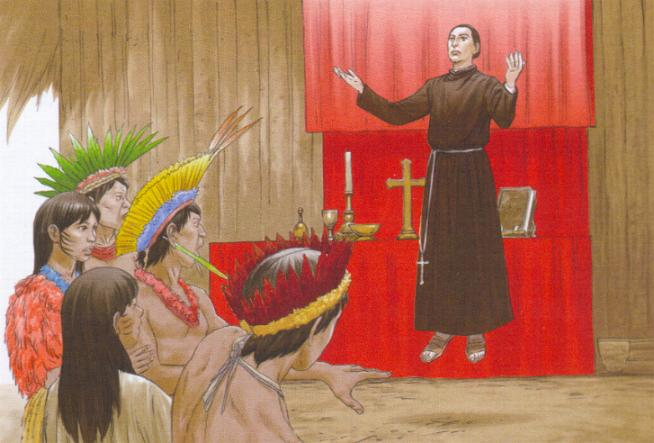
Depois deste fato, o Cacique
Cunhambebe decidiu que o Irmão José de Anchieta deveria voltar a São Vicente, a
fim de evitar futuras discórdias. E ele próprio, o Cacique Cunhambebe foi quem o
conduziu de regresso.
Em São Vicente, as conversações
chegaram ao seu final, Padre Manuel da Nóbrega conseguiu a libertação de todos
os índios prisioneiros, e inclusive da índia Igaraçu, noiva do Cacique Aimberê.
Assim, na sua longa missão de sete meses entre os índios, os Jesuítas
conseguiram instaurar a paz, pelo menos com as tribos cujos Chefes foram a
Iperoig, para onde logo regressaram Cunhambebe e Aimberê.
Durante o período de paz, os
franceses viviam com os índios Tamoios na Guanabara, e para mais cativar a amizade dos
selvagens, desenvolveram na tribo, a criação de gado e instalou e incrementou a
produção de tecidos em teares manuais.
VARÍOLA SINISTRA
AMEAÇA
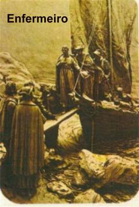
Mesmo no ano 1563, quando Anchieta
conviveu diariamente com o perigo de morte em Ubatuba, por causa dos índios que não
queriam a paz, agora o perigo de morte voltou novamente a ameaçar os jesuítas e os
índios do Planalto de Piratininga, por causa de uma terrível epidemia de varíola,
espalhada pelos europeus, que matou quase trinta mil índios na costa brasileira. Os
férteis campos de Piratininga logo se transformaram num vasto hospital a céu aberto
para atender a todos os casos.
Nessa ocasião, Irmão José valeu-se do
seu conhecimento das ervas nativas e com sabedoria aplicou aqueles produtos em beneficio
dos selvagens enfermos. Nos casos mais graves, recorria aos sangramentos que apavoravam
os índios, já que andavam bastante assustados com a doença que nunca tinham visto. O
resultado foi admirável, sendo milhares de vidas salvas, pelas mãos dos missionários
Jesuítas.
FUNDAÇÃO
DA CIDADE DO RIO DE JANEIRO
Debelada a epidemia de varíola,
também na Capitania da Guanabara, a ameaça dos Tamoios fez o Padre Nóbrega chamar
novamente o Irmão José de Anchieta. Desta vez, atendendo a convocação do Governador
do Brasil, eles foram à Guanabara ajudar na fundação de um forte e na edificação de
uma cidade para fazer frente aos franceses apoiados pelos Tamoios. O Governador Mem
de Sá incumbiu esta tarefa ao seu sobrinho Estácio de Sá, que imediatamente convocou
Nóbrega e Anchieta, e também, para povoar o vilarejo que ia construir, chamou
gente de outras capitanias e até de Portugal.
Mesmo com a resistência do inimigo,
o povoado, que recebeu o nome de São Sebastião do Rio de Janeiro, começou a se tornar
realidade em janeiro de 1565.
Durante esses dois anos, Anchieta
serviu como mensageiro, levando notícias dos acontecimentos no Rio de Janeiro a Mem de Sá,
Governador Geral do Brasil, que estava em Salvador, na Bahia.
Todavia, as tribos dos Tamoios da
região da Guanabara, prosseguiram com os seus ataques e hostilidades contra as
fazendas e população civil.
Por essa razão, silenciosamente,
os portugueses neste período, também decidiram aumentar o poderio militar. Os
índios da região, sempre muito observadores, começaram a recear que iam perder a
sua liberdade, e assim, mesmo sabendo da grande desigualdade de forças, não se
intimidaram, e enfrentaram os portugueses num renhido combate. A guerra
se estendeu por mais de um ano, e só terminou quando o Governador Geral do
Brasil, Mem de Sá, que estava em Salvador, na Bahia, reforçou o exército de seu
sobrinho Estácio de Sá na Guanabara, trazendo pessoalmente uma grande guarnição
militar em três navios e muita munição. Os portugueses destruíram tudo,
queimaram as tribos indígenas e as naus francesas. A batalha terminou no dia 20
de Janeiro de 1567, com a morte do grande guerreiro indígena Cacique Aimberê,
Chefe da Confederação dos Tamoios. Na última batalha, Estácio de Sá foi ferido
na face por uma flecha envenenada. Não deu grande importância, porque parecia um
ferimento banal. Mas o veneno trabalhou lentamente e causou uma séria infecção,
matando-o no dia 20 de Fevereiro de 1567, um mês depois do grande combate.
Padre José de Anchieta estava presente e ministrou-lhe os últimos
Sacramentos.
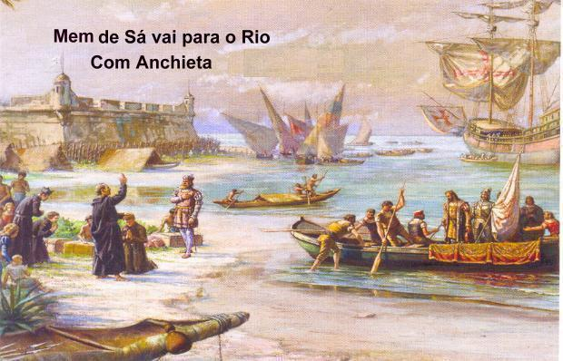
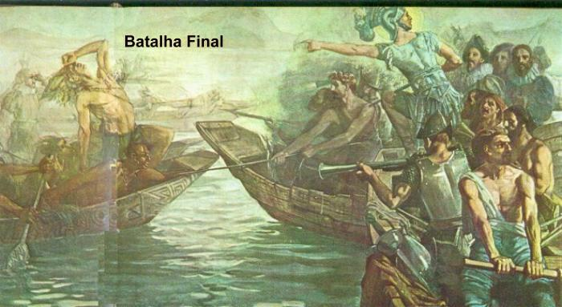
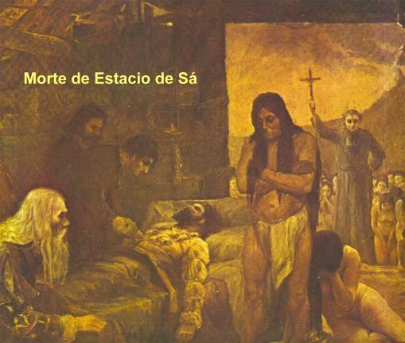
Os franceses que não foram mortos
se renderam e no julgamento, foram condenados a morte, mas receberam o auxílio
religioso. Um deles, no entanto, não aceitou a assistência do missionário
Jesuíta, porque não estava arrependido de suas heresias. Irmão José foi
incumbido de conversar com o homem e com a graça
de DEUS, levou-o a se converter.
O cronista da época relatou, que
no momento da execução, como a laçada da forca tinha sido mal feita, o francês
ficou sofrendo pendurado, mas não morria. Irmão Anchieta ficou aflito e
preocupado, porque aquele sofrimento não fazia parte da execução. Então,
repreendeu o carrasco, orientando-o a fazer corretamente o seu oficio.
A corda foi levantada, o laço foi refeito e o homem finalmente morreu
enforcado.
Este episódio, durante longo
tempo, se constituiu como um obstáculo a beatificação de Anchieta, porque
algumas autoridades religiosas entenderam como se o Irmão José tivesse
encontrado prazer na execução do francês. E na realidade, o que ele não queria
era aumentar o sofrimento daquele infeliz que estava pagando o seu tributo à
sociedade na forca, por ter sido condenado à morte pela justiça dos homens. A
Sagrada Congregação dos Ritos por fim, aceitou os argumentos do Padre Hélio
Abranches Viotti, SJ, postulador da causa, e Padre José de Anchieta foi
beatificado.
FINALMENTE SACERDOTE DO ALTÍSSIMO
No início de 1566, em mais uma
daquelas idas e vindas a Salvador, na Bahia, com a missão de levar as notícias
ao Governador Mem de Sá, o irmão José finalmente completou os seus estudos
e recebeu os últimos ensinamentos necessários, sendo ordenado sacerdote no dia
22 de Agosto de 1566. Aos trinta anos de idade, realizou o seu sonho pelas mãos
de Dom Pedro Leitão, bispo do Brasil, que fora seu colega de estudos em Coimbra.
E assim, voltando da missão, incorporado a esquadra preparada pelo Governador Geral
do Brasil para auxiliar o seu sobrinho Estácio de Sá na conquista definitiva da
Guanabara, para expulsar os franceses e acabar com a Confederação dos Tamoios,
chegou ao Rio de Janeiro e participou da batalha final.
De 1567 a 1577 governou os Jesuítas
das Casas de São Vicente e São Paulo. Em Setembro do ano 1577 voltou a Salvador, na
Bahia, e com a morte do Padre Manuel da Nóbrega, foi nomeado Provincial do Brasil,
que é o cargo mais elevado da Companhia de Jesus.
A GRAÇA DIVINA NO
IRMÃO JOSÉ
Em face da grande quantidade de
manifestações sobrenaturais que ocorriam através da modesta e humilde intercessão do Irmão José, todas as tribos indígenas que o conhecia, o respeitavam
com muita seriedade, tratando-o como um poderoso “feiticeiro”. E esta imagem
colaborou efetivamente, para ele salvar a vida de um homem. O mestre de obras
Antonio Luis junto com um índio de uma tribo inimiga foi preso e estava prestes
a ser devorado por índios Tupinambás. Autorizado pelo Cacique Pindobuçu, Irmão
José seguiu para tentar libertar os condenados, embora tenha sido avisado, que
também ele, poderia ser morto. Mas seguiu em frente, o seu coração amoroso lhe
infundia uma grande confiança e muita coragem. Chegando próximo aos selvagens,
argumentou que Antonio Luis construía as casas de DEUS, se morresse, não haveria
ninguém para construí-las, e os assassinos dele, seriam feridos pela ira do
SENHOR. Com medo do “feiticeiro”, os índios deixaram aquele homem em paz,
mas trataram de comer rapidamente, o índio que o acompanhava.
intercessão do Irmão José, todas as tribos indígenas que o conhecia, o respeitavam
com muita seriedade, tratando-o como um poderoso “feiticeiro”. E esta imagem
colaborou efetivamente, para ele salvar a vida de um homem. O mestre de obras
Antonio Luis junto com um índio de uma tribo inimiga foi preso e estava prestes
a ser devorado por índios Tupinambás. Autorizado pelo Cacique Pindobuçu, Irmão
José seguiu para tentar libertar os condenados, embora tenha sido avisado, que
também ele, poderia ser morto. Mas seguiu em frente, o seu coração amoroso lhe
infundia uma grande confiança e muita coragem. Chegando próximo aos selvagens,
argumentou que Antonio Luis construía as casas de DEUS, se morresse, não haveria
ninguém para construí-las, e os assassinos dele, seriam feridos pela ira do
SENHOR. Com medo do “feiticeiro”, os índios deixaram aquele homem em paz,
mas trataram de comer rapidamente, o índio que o acompanhava.

Em 1582, uma esquadra espanhola
comandada por Diogo Flores Valdez, devido a uma preocupante emergência de escorbuto
na tripulação, atracou no porto do Rio de Janeiro. Padre José de Anchieta mandou
construir um barracão para tratar dos marujos e providenciou agasalhos, alimentos
e ervas medicinais da flora brasileira, conforme tinha aprendido com os índios,
auxiliando de maneira inteligente e efetiva.
Embora improvisado, as instalações
atenderam as necessidades e a maioria recobrou a saúde. E por isso, o barracão não
foi demolido, e continuou a ser utilizado como um local adequado e muito procurado
pelo povo carente da região a fim de tratar de suas enfermidades. E em consequência,
se tornou o primeiro hospital do Rio, ou seja, a Santa Casa de Misericórdia.
Num dia 24 de Junho, quando se comemora
a festa de São João, na Vila do Espírito Santo (Vitória), o povo se divertia com as
cenas engraçadas que aconteciam. E numa delas, vários homens corriam atrás de um pato,
pois a brincadeira consistia em pegar o pato. E na ânsia de pegá-lo, alguns derrapavam
e deitavam no chão, outros pulavam no vazio porque o pato saia de lado, até que
dois rapazes agarraram o “bicho” (bicho não, a ave) ao mesmo tempo. E
agora? Concretizou-se um impasse! Quem era o vencedor? O Padre Anchieta que
assistia a tudo foi convidado a decidir a questão. Ele de imediato transferiu a
responsabilidade a um menino de quatro anos, que era mudo de nascença, e estava
ao lado. O Padre lhe perguntou:
- “Dize-me, quem
foi que ganhou o pato”?
- “Foi este,
respondeu o menino, mas o pato é meu, pois quero levá-lo para minha mãe”!
Diante de todos que conheciam a criança,
aconteceu o milagre! O menino mudo de nascença recuperou a voz, pela misericórdia infinita
de DEUS e preciosa intercessão do Padre Anchieta!
Em outra ocasião, viajando numa canoa
no rio Itanhaém, um grupo de Jesuítas com suas batinas pretas, padeciam sob calor
escaldante do sol. Padre Anchieta que estava entre eles, chamou em voz alta algumas
aves que estavam nas árvores próximas à margem do rio. Sem demora, um bando de
guarás atendeu ao chamado e ficaram dando voltas por cima da canoa, produzindo
uma aliviadora sombra para os religiosos, até o porto de desembarque.
Os pássaros eram os seus companheiros
mais fieis, pousavam sobre os seus ombros e até sobre o seu breviário.
O trabalho do Padre Anchieta foi digno
e admirável sobre todos os aspectos, além de auxiliar de modo eficiente a divulgar o
cristianismo e a enraizá-lo no Brasil. Levou o seu conhecimento, a sua fé e o seu
imenso amor a grande parte do território nacional, percorrendo as distâncias quase
sempre a pé, ou a cavalo e em embarcações, atendendo e socorrendo pequenos recantos
e também as Aldeias e Vilas. Abriu caminhos que se transformaram em estradas e
contribuiu para manter unificado o país nos séculos futuros. Lançou os
fundamentos da catequese e da educação dos jesuítas, útil e benéfica a todo o
povo, e com seu carisma de comunicador, conseguiu um amplo e amigável
entendimento com todos os índios.
OBRAS DO
PADRE JOSÉ DE ANCHIETA
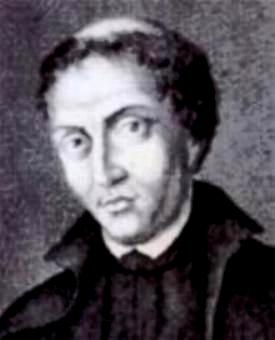
De toda a sua obra, destacam-se a
“Gramática da Língua mais Falada na Costa do Brasil”, “De Gestis Mendi de
Saa”, “Poema da Bem-aventurada Virgem Maria, Mãe de Deus” ("De
Beata Virgine Dei Matre Maria"), os autos para o Teatro de Anchieta e suas
inúmeras Cartas. Sua obra pode ser considerada como a primeira manifestação literária
em terras brasileiras e contribuiu, efetivamente para a formação da cultura nacional.
A coleção de suas Obras Completas está dividida em três temáticas: na poesia, prosa
e nos autos para representação teatral.
Anchieta ganhou vários títulos, como:
“Apóstolo do Novo Mundo”, “fundador da cidade de São Paulo”, “curador
da alma e do corpo”, “carismático”, “Santo”, e principalmente
“Apóstolo do Brasil”.
Ensinava latim e português aos colonos,
seminaristas e aos índios, cuidava dos feridos, dava conselhos, escrevia poesias e autos
em vários idiomas, inclusive o "tupi", conquistando de maneira concreta
a confiança dos nativos. Os autos que escreveu e o grande número de apresentações fizeram
com que seja considerado como o fundador do teatro brasileiro.
MORTE E BEATIFICAÇÃO
Desde 1585 pediu dispensa do posto maior
de Provincial, por causa das suas enfermidades. O cargo exigia que todos os anos ele
visitasse as casas Jesuítas do Brasil, o que sempre fez, exceto quando impedido pela
pouca saúde. Em 1588, chegando o seu substituto, deixou o cargo de Provincial e assumiu
como superior as casas no Espírito Santo. Aí permaneceu o resto de seus dias, com
exceção de três interrupções, quando foi à Bahia em 1592, para a Congregação
Provincial, e em 1593 e 1594, quando foi ao Rio de Janeiro como Visitador. Além
da Casa de Vitória, ocupava-se igualmente do governo das aldeias de Reritiba
(Anchieta), Guarapari, Reis Magos e Carapina, no Estado do Espírito Santo.
Estando na Vila do Espírito Santo (Vitória)
e sentindo que o seu fim estava próximo, pediu que o levassem à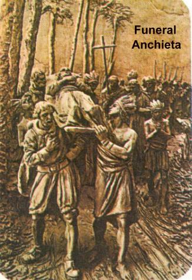
Aldeia de Reritiba (Anchieta),
onde faleceu no Senhor no dia 9 de junho de 1597, com 63 anos de idade, dos quais, 44
anos dedicados a formação religiosa do povo brasileiro. De Reritiba
(Anchieta) foi transportado de volta à Vitória. O cortejo fúnebre formado por
pessoas de diversas etnias e classes sociais contava com mais de 3.000 índios
que faziam questão de carregar nos ombros o caixão de Anchieta, num percurso de
80 quilômetros, durante três dias de viagem, sendo recebido na Vila do Espírito
Santo (Vitória) solenemente por todo o povo e autoridades, tanto eclesiásticas
como civis.
Anchieta cumpriu em tudo e de maneira
admirável as atividades próprias dos jesuítas e demais missionários daquela época.
Não só as praticou, mas distinguiu-se como mestre. Em 1560, escreveu ao Padre Geral
da Companhia de Jesus, Diogo Laínes, em Roma, Itália:
"Quase sem
cessar, andamos visitando várias povoações, tanto de índios, como de portugueses,
sem fazer caso de calmas, chuvas e grandes enchentes de rios, e muitas vezes à noite
por bosques muito escuros socorremos os enfermos, não sem grande trabalho, seja
pela aspereza dos caminhos, como pela inclemência do tempo. Sendo tantas as
povoações e tão distantes umas das outras, nem nós bastamos para acudir
a tão variadas necessidades, como ocorrem, nem, ainda que fôssemos muitos mais,
seriamos suficientes. A isto se ajunta que nós, que socorremos as necessidades
dos outros, muitas vezes estamos mal dispostos e, fatigados de sofrimentos, e
desfalecemos pelo caminho, de maneira que apenas o conseguimos levar a cabo a
missão. Deste modo não menos necessidade de ajuda parece terem os médicos, do que
os enfermos. Mas nada é árduo aos que têm por fim somente a glória de Deus e a
salvação das almas, pelas quais não duvidam em dar a própria vida".
Dele se contam muitos prodígios,
profecias e milagres, curas de todas as naturezas, e até mesmo a familiaridade com
pássaros e animais ferozes, como um São Francisco brasileiro, ou um Santo Antônio de
Pádua de nossa terra. Dele se diz que rezando ou meditando, levitava em êxtase. Enfim,
suas virtudes e qualidades, as suas criações espirituais e literárias, e um grande número
de extraordinárias manifestações, lhe propiciaram uma grande fama, que humildemente
jamais utilizou e aceitou, e que nunca se considerou merecedor. Foi Beatificado
pelo Papa João Paulo II, no dia 22 junho de 1980, depois do processo ter se
arrastado por mais de 300 anos ma Cúria Romana. Segundo o conteúdo do Processo, para a prova
definitiva foi utilizado para a Beatificação, o “milagre” acontecido por
sua fervorosa intercessão, quando converteu três pessoas ao cristianismo num
mesmo dia, salvando três almas da condenação eterna.
"CANONIZAÇÃO"
Após um processo global de canonização de mais de 417 anos, o decreto foi
assinado a 3 de Abril de 2014 pelo Papa Francisco. No dia 24 de Abril
realizou-se a cerimônia de ação de Graças, com a celebração de uma Santa Missa
presidida pelo Papa Francisco, na Igreja de Santo Inácio de Loyola em Roma. O
Padre Anchieta é o segundo santo nativo das Ilhas Canárias, e cuja festa litúrgica
se comemora no dia 24 de Abril. Foi uma canonização por decreto, também denominada
Canonização Equivalente, sendo a sexta canonização realizada pelo Papa Francisco,
bem como o segundo jesuíta a ser canonizado pelo próprio Papa.
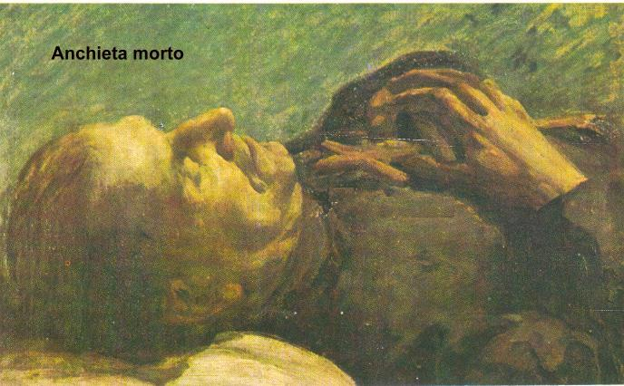

 Próxima Página
Próxima Página
Página Anterior
Retorna ao Índice